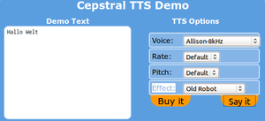

Sprachausgabe
Zum Verständnis dieses Artikels sind folgende Seiten hilfreich:
Sprachausgabe ("Text-to-Speech", TTS) ist die Möglichkeit, geschriebenen Text in gesprochene und damit hörbare Sprache umzuwandeln. Die Ausgabe von Text als Sprache ist Teil des barrierefreien Ubuntu: Barrierefreiheit. Dazu gehört
die Umwandlung der Buchstaben in Lautwerte (Phoneme) auf Basis der gewählten Sprache (eine Ausgabe auf Deutsch mit der voreingestellten Sprache "Englisch" ist nahezu unverständlich)
die Ausgabe dieser Phoneme als Sprache mit einer installierten Stimme
"Einfache" Programme wie eSpeak nutzen synthetische "Computer"-Stimmen. Anspruchsvoller ist die digitale Sprachsynthese auf der Basis menschlicher Sprecher.
Einfache Sprachausgabe¶
Hierbei geht es darum, einen gewünschten Text als gesprochene Sprache wie ein Hörbuch auszugeben. Die nachstehenden Programme eSpeak und Festival werden gern von komplexeren Programmen als Basis zur Phonemerzeugung verwendet.
Cainteoir¶
Cainteoir  bietet eine grafische Oberfläche für GNOME 3, um Dokumente in verschiedenen Formaten und Internetseiten vorzulesen und bei Bedarf als .wav- oder .ogg-Datei zu speichern. Es bringt eine eigene TTS-Engine mit.
bietet eine grafische Oberfläche für GNOME 3, um Dokumente in verschiedenen Formaten und Internetseiten vorzulesen und bei Bedarf als .wav- oder .ogg-Datei zu speichern. Es bringt eine eigene TTS-Engine mit.
Nachteilig ist, dass es bisher nicht in den offiziellen Paketquellen enthalten ist und daher erst aus dem via Github verfügbaren Quellcode kompiliert werden muss.
eSpeak¶
eSpeak ist ein Open-Source-Sprach-Synthesizer, der Ausgaben in vielen Sprachen erzeugen kann. Die Spracherzeugung erfolgt vollständig synthetisch (Formatsynthese). Es handelt sich um ein reines Kommandozeilenwerkzeug, allerdings existiert eine eigene einfache grafische Oberfläche. Eine direkte Aufnahme der Ausgabe als .wav-Datei ist möglich. eSpeak dient auch als Basis für andere Programme (z.B. Gespeaker), die zur Spracherzeugung darauf zurückgreifen.
Gespeaker¶
Gespeaker ist ein GTK+-Frontend für eSpeak. Es kann verwendet werden, um eingegebenen Text direkt als Sprache auszugeben, oder vorhandene Texte (*.txt) vorlesen zu lassen. Dabei können auch gleich Aufnahmen im .wav-Format erstellt werden. Neben den in eSpeak vorhandenen Stimmen lassen sich auch die "schöneren", natürlicher klingenden Stimmen des MBROLA-Projekts nutzen.
Festival¶
Festival liefert ein Gerüst zur Sprachwiedergabe (TTS - "Text-to-Speech"). Das Projekt wird von der Universität Edinburgh entwickelt. Es lassen sich Module für etliche Sprachen integrieren; der Zugriff kann über verschiedene Wege erfolgen: über die Kommandozeile, einen Scheme-Interpreter, als Server, über Java oder eine Emacs-Schnittstelle. Standardmäßig wird Englisch als Ausgabe-Sprache verwendet; es lassen sich aber weitere Sprachen integrieren. Die vollständige Dokumentation, auch zum Erstellen neuer Sprachen/Stimmen, ist über das Projekt festvox.org der Carnegie Mellon University beziehbar.
Flite¶
Flite (Festival lite) ist ein kleines Laufzeit-Sprachsynthesizer-Programm, das auf Festival basiert, aber vollständig in C verfasst ist. Das Programm wurde an der Carnegie Mellon University entwickelt. Es ist als Ausgabemodul für andere Programme oder Server konzipiert, Flite kann beispielsweise in Jovie oder KMouth eingesetzt werden. Das Programm ist mit den Festival-Stimmen kompatibel, beim Kompilieren ließen sich auch weitere Stimmen aus festvox einbeziehen.
Omilo¶
Omilo (abgeleitet vom griech. ομιλία - Sprache) ist ein Programm zur Textumwandlung, das Festival, Flite oder Open Mary als Sprachausgabe verwenden kann. Es lassen sich beliebige Texte oder Textdateien in Sprache umwandeln und als Wave-Dateien abspeichern.
SVOX - pico2wave¶
pico2wave von SVOX ist ein vollwertiger Sprachsynthesizer für die Kommandozeile, der Texte in deutsch, englisch/amerikanisch, italienisch, französisch und spanisch in eine Wave-Datei umwandeln kann. Verwendet werden "Hidden Markov Model-Algorithmen" (HMM) zur Spracherzeugung.
Benötigt wird das Paket
libttspico-utils
 mit apturl
mit apturl
Paketliste zum Kopieren:
sudo apt-get install libttspico-utils
sudo aptitude install libttspico-utils
Die Befehlssyntax auf der Kommandozeile ist
pico2wave --lang SPRACHKÜRZEL --wave DATEINAME.wav "TEXT"
Verwendbare Sprachkürzel sind de-DE, en-US, en-GB, es-ES fr-FR, it-IT. Eine direkte Wiedergabe kann z.B. mit einer Eingabe wie
pico2wave --lang de-DE --wave /tmp/Test.wav "Hier folgt der Test-Text" ; play /tmp/Test.wav; rm /tmp/Test.wav
erfolgen; hier wird play aus SoX für die Ausgabe verwendet, die Testdatei in /tmp anschließend gleich wieder gelöscht.
In gewissem Umfang lassen sich auch Textdateien direkt wiedergeben (bis ca. 35 kb Größe, UTF-8-Kodierung), hier ein Beispielskript, mit dem das möglich ist (Wiedergabe erfolgt mit avplay):
1 2 3 4 | #!/bin/bash pico2wave -l=de-DE -w=/tmp/test.wav "$(cat ${1})" avplay -f wav -loglevel 0 >/dev/null -x 100 -y 50 -vn -autoexit /tmp/test.wav rm /tmp/test.wav |
Das Skript abspeichern (z.B. als svox.sh in /usr/local/bin, um es systemweit nutzen zu können) und ausführbar machen, Aufruf erfolgt im Terminal über
svox.sh TEXTDATEI.txt
Wenn die Textdatei zu umfangreich ist, erscheint umgehend die Meldung
Cannot put Text (-102): invalid argument supplied
Sprachsynthese¶
Um für verschiedene Aussprachen aus dem Text korrekt klingende Phoneme erstellen zu können, werden neben dem geeigneten Sprachpaket auch Sprecher, "Stimmen", benötigt.
Mbrola¶
Das Mbrola Projekt stellt hierfür eine Reihe von Stimmen sehr vieler Sprachen zur Verfügung. Das Programm kann aus den Paketquellen installiert[1] werden:
mbrola (multiverse)
mbrola-de6 (multiverse, männlich)
mbrola-de7 (multiverse, weiblich)
mbrola-de4 (multiverse, männlich)
mbrola-de5 (multiverse, weiblich)
mit apturl
Paketliste zum Kopieren:
sudo apt-get install mbrola mbrola-de6 mbrola-de7 mbrola-de4 mbrola-de5
sudo aptitude install mbrola mbrola-de6 mbrola-de7 mbrola-de4 mbrola-de5
Mbrola stellt dabei lediglich die Ausgabe von fertigen Phonemen in Sprache mittels eigener installierbarer Stimmen zur Verfügung und kann nur mit einem Textwandelprogrammes wie eSpeak oder Festival eingesetzt werden. Sinnvoll ist daher z.B. die Kombination von Gespeaker mit Mbrola.
Hinweis:
Unter Ubuntu 16.04 funktioniert zumindest die 64-bit-Version aus den Paketquellen nicht; der Aufruf führt zu einem "Segmenation fault". Abhilfe schafft die Verwendung einer neuen Debian-Version 3.03h+2-3+b1, die z.B. von der TU Dresden  bezogen werden kann. Hintergründe dazu in diesem Debian Bug-Report .
bezogen werden kann. Hintergründe dazu in diesem Debian Bug-Report .
Zusätzliche deutsche Stimmen, oder zur Verwendung in älteren Ubuntu-Versionen, kann man von der Downloadseite des Projektes herunterladen. Nach dem Entpacken [3] mit Root-Rechten [4] nach /usr/share/mbrola kopieren und die Leserechte anpassen (drwxr-xr-x für Ordner und -rwxr--r-- für Dateien). Das Verzeichnis de* sollte sich somit im Ordner /usr/share/mbrola befinden. Alternativ kann man sich von debian.org  deutsche Stimmen (mbrola-de4, -de5, -de6 -de7) als Debian-Paket herunterladen und direkt installieren[2].
deutsche Stimmen (mbrola-de4, -de5, -de6 -de7) als Debian-Paket herunterladen und direkt installieren[2].
Hinweis!
Fremdpakete können das System gefährden.
KDE-Accessibility-Projekt¶
Das KDE-Accessibility-Projekt stellt einige Programme für die Barrierefreiheit unter Ubuntu zur Verfügung. Es kann als Metapaket
kdeaccessibility (nur bis 14.04)
mit apturl
Paketliste zum Kopieren:
sudo apt-get install kdeaccessibility
sudo aptitude install kdeaccessibility
installiert[1] werden. Es beinhaltet unter Ubuntu 14.04 folgende Pakete: kmag, kmousetools, kde-icons-mono, kmouth, jovie. Die beiden nachfolgend vorgestellten Programme sind Bestandteile dieses Metapakets, die weiteren Teile sind unter Barrierefreiheit-KDE kurz beschrieben.
Jovie¶
Jovie (vormals kttds) ist der Sprachausgabe-Dienst für KDE und Teil des KDE-Accessibility-Projekts. Er besteht aus Modulen für die Ausgabe von Texten über die D-Bus-Schnittstelle, und kann so aus externen Programmen aufgerufen werden. Jovie kann beliebige Textdateien "vorlesen", und Text aus diversen KDE-Anwendungen wie KMouth, Konqueror oder Kate (auch als Bestandteil anderer Programme), oder Meldungen von KNotify wiederzugeben. Zur Sprachausgabe wird dazu das Programm speech-dispatcher verwendet, als Sprachgeneratoren können Programme wie eSpeak oder - theoretisch - Festival eingesetzt werden. Jovie bietet außerdem die Möglichkeit, Filter z.B. für falsch ausgesprochene Wörter anzulegen, sowie XML-Dateien in Text umzuwandeln.
KMouth¶
KMouth ist ein Programm, mit dem Texteingaben in Sprache umgewandelt und ausgegeben werden können. Es ist ebenfalls Teil des KDE-Accessibility-Projekts. Zur Ausgabe können verschiedene Sprach-Synthesizer verwendet werden. KMouth bietet außerdem selbst konfigurierbare Wörterbücher mit Standard-Sätzen und -Äußerungen, der Gesprächsverlauf wird in einem Fenster dokumentiert.
Wandelprogramme Text in Tondatei¶
Damit kann ein Textdokument (z.B. PDF- oder ASCII-Dateien) in eine Tondatei umgewandelt und dann mit einem üblichen Audiospieler wiedergegeben werden. In der Regel handelt es sich um Skripte, die auf der Kommandozeile[6] auszuführen sind.
abtool¶
abtool ist eine Weiterentwicklung von Book-To-MP3 und liefert ein umfangreiches Programm, das es ermöglicht, eine Vielzahl von Dokumenttypen einfach in MP3- bzw. OGG-Dateien umzuwandeln.
Book-To-MP3¶
Book-To-MP3 ist ein von Manabe entwickeltes Bash-Skript, mit dem eine Vielzahl von Textdokumenten in MP3-Dateien umgewandelt und so wiedergegeben werden können. Es verarbeitet .txt, .rtf, .pdf, .doc, .lit, .html/htm-Dateien, die Ausgabe erfolgt entweder als eine große Datei oder in mehreren kleineren Dateien. Das Skript erkennt deutsche und englische Texte automatisch und verwendet die entsprechenden Sprach-Stimmen für die Aufzeichnung.
pdf2mp3¶
pdf2mp3 ist ein von rennau80 entwickeltes Python-Skript. Es verbindet mehrere Programme (wie pdftotext, lame, espeak, wavbreaker), um aus einer ASCII- ( .txt, .dat) oder PDF-Datei eine Audio-Datei (.wav oder .mp3) zu erstellen. Da eSpeak verwendet wird, sind sehr viele Sprachen verfügbar. Unter diesem Foreneintrag sind zwei Code-Versionen zu finden: eine, die mit text2wave arbeitet (nur in englischer Sprache), sowie eine Version, die etliche Sprachen bei der Konvertierung zu einer Audio-Datei beherrscht.
xsane2speech¶
xsane2speech ist eine Wrapper-Skript für XSane, mit dem eine eingescannte Textvorlage sofort "vorgelesen" werden kann. Die dafür nötige Texterkennung erfolgt über tesseract-ocr oder Cuneiform-Linux, die Textausgabe kann über die Sprachsynthesizer-Programme eSpeak oder Festival erfolgen. Der Text wird gespeichert, er kann sowohl direkt wiedergegeben als auch via Lame als .mp3-Datei gespeichert werden. Zum Einsatz kommen außerdem Zenity (für Abfragen zum Verlauf), ggf. auch recode (zur Sicherstellung der richtigen Textkodierung).
Bildschirm-Vorleseprogramme (Screen-Reader)¶
Bei diesen Programmen wird alles, was am Bildschirm zu sehen ist, also auch das Menü sowie Möglichkeiten bei Eingabe- und Auswahlfenstern, akustisch ausgegeben. Das ist für Sehbehinderte wesentlich. Siehe Barrierefreiheit
Orca¶
Orca ist der Screen-Reader der GNOME-Desktop-Umgebung, und als solcher Bestandteil der Ubuntu-Standard-Installation. Orca greift für die Sprachausgabe standardmäßig auf speech-dispatcher zurück, es können verschiedene Sprach-Synthesizer zum Einsatz kommen. Für deutschsprachige Ausgaben empfiehlt sich die Verwendung von eSpeak. Orca liefert außerdem eine Bildschirmlupe, die Ausgabe kann zudem auch in Brailleschrift erfolgen. Dabei ist das Programm sehr vielseitig konfigurierbar, sodass blinde Menschen oder Menschen mit einer Sehbeeinträchtigung/Behinderung die Ausgaben sehr dezidiert für spezielle unterschiedliche Bedürfnisse anpassen können.
Knoppix-adriane¶
Das bekannte Live-System "Knoppix" kann mit der Option adriane gestartet werden und funktioniert dann gleich als Bildschirmvorleseprogramm für die Menüs usw. Knoppix Adriane . Wenn man ohne Optionseingabe auskommen möchte, kann man von knopper.net eine Knoppix-Version herunterladen, die automatisch mit dem Sprachausgabesystem "Adriane" (steht für "Audio Desktop Referenzimplementation und Netzwerk-Umgebung") hochfährt.
Speakup¶
Von der Seite linux-speakup.org gibt es ein weiteres Linuxprogramm, Speakup, das zu einem Projekt für blinde Linuxnutzer gehört.
FreeTTS¶
FreeTTS ist freie Software zur Sprachsynthese komplett in Java auf der Basis von Flite geschrieben und ist eine Implementierung von Suns Java Speech API. Es kann von FreeTTS heruntergeladen werden. Auch hier gibt es ein Installationsskript[6].
Onlinesysteme¶
Statt sich ein Programm zu installieren und einzurichten, kann man Sprachausgabe von Texteingaben auch komplett im Netz vornehmen. Meist nutzt man dazu eine Demoversion und gibt seinen Text jeweils ein. Hier nur zwei Beispiele, mehr dazu unter Kommerzielle Systeme.
VoiceForge¶
Von der Fa. Cepstral gibt es auf voiceforge.com eine Online-Demoversion, welche beliebige einkopierbare Texte oder Nachrichten auch auf Deutsch spricht (Stimmen "Katrin" oder "Matthias").
Kommerzielle Systeme¶
Eine hervorragende und aktuelle Übersicht über kommerzielle Systeme zur Sprachausgabe, teilweise auch als Screenreader, gibt es unter ttssamples.syntheticspeech.de jeweils mit Möglichkeit, die Qualität an Beispielsätzen zu testen. Etliche der Firmen bieten auch die Möglichkeit eines Online-Tests.
Cepstral¶

Hierbei handelt es sich um ein kommerzielles Programm, für welches eine Demoversion zu finden ist (s. oben Online-Version "VoiceForge").
Es gibt auch Deutsch als Sprache mit sowohl männlicher als auch weiblicher Stimme in sehr guter Qualität. Beide kann man sich zu Testzwecken herunterladen (Stimmen "Katrin" und "Matthias"). Nach dem Entpacken des tar.gz-Archivs [3] in ein Verzeichnis kann man dort das Skript install.sh ausführen[4].
sudo ./install.sh
Ein Test mit dem Beispiel der Stimme "Katrin" sieht so aus:
swift %t -o %w -n Katrin swift "Hallo, ein Katrin Stimmentest"
Solange man die Stimme nicht erworben hat, bekommt man vorher jeweils einen Hinweis zu hören.
Voxin¶
Von Oralux.org gibt es das IBM-Programm Viavoice mit den Screenreadern JAWS und VIRGO für EUR 4,29 pro Sprache auch für Linux.
Problembehebung¶
PulseAudio¶
Falls die Sprachausgabe unvollständig sein sollte, d.h. Teile verschluckt werden, kann das an den zu niedrigen Qualitätseinstellungen von PulseAudio liegen.
Links¶
Übersicht zu Text-to-Speech Software bei ubuntu.com
im Ubuntu-WikiRobo
einfaches Skript zur Sprachausgabe
- Erstellt mit Inyoka
-
 2004 – 2017 ubuntuusers.de • Einige Rechte vorbehalten
2004 – 2017 ubuntuusers.de • Einige Rechte vorbehalten
Lizenz • Kontakt • Datenschutz • Impressum • Serverstatus -
Serverhousing gespendet von